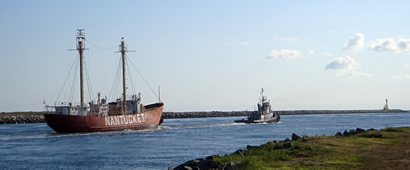
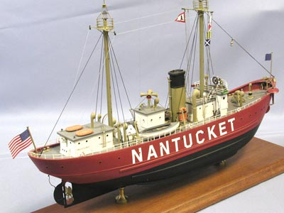
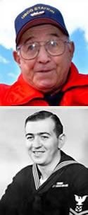

LV-112
News
Home › News
News
- Nantucket Lightship / LV-112 selected as National Treasure
- Nantucket / LV-112 featured on television
- LV-112 featured in issue of “PowerShips” magazine
- Nantucket / LV-112 moves back home to Boston
- LV-112 featured in “Sea History” magazine
- LV-112 model kit available
- New book release — “The Finest Hours”
- Recommended reading — “Due to Enemy Action”
- Former LV-112 life saving hero celebrated
- In the news & further reading
Nantucket Lightship / LV-112 selected as National Treasure
National Treasures — People Saving Places (National Trust for Historic Preservation). In 2012, Nantucket Lightship / LV-112 was designated a National Treasure (one of 32 historic sites in the United States) by the National Trust for Historic Preservation.
National Treasures are historic places that tell the American story — and they need your help. From beloved schoolhouses to inspiring monuments, from ancient sites to modern masterpieces, thousands of these icons are endangered as never before. Join our National Treasures campaign and help us save these irreplaceable gems. Learn more about National Treasures.
Nantucket / LV-112 featured on television
Once again, Nantucket / LV-112 was a featured segment on ABC-TV Boston affiliate WCVB Channel 5 Boston’s Chronicle HD (2012). Chronicle airs at 7:30 pm Monday through Friday and mostly features stories about New England events and places. LV-112 was included in a segment about the City of Chelsea, Massachusetts. A section of Chelsea is on the Boston Harbor waterfront and is home to the historic Fitzgerald Shipyard. LV-112 is shown in dry-dock at the shipyard, undergoing its first major phase of restoration. In addition, LV-112's home port was the United States Light House Service (USLHS), Second District Depot from 1936–1939. The USLHS merged with the U.S. Coast Guard (USCG) in 1939. Boston was the USCG's First District Headquarters. Nantucket / LV-112 always operated out of Chelsea / Boston from 1936 until she was decommissioned in 1975.
In 2010/2011, Nantucket / LV-112 was a featured segment on ABC-TV Boston affiliate WCVB's Chronicle HD. LV-112 was included in a segment about the Boston “Harborwalk,” where the city meets the sea, and is open to all: 39 miles of waterfront access that can be explored by foot and other transportation alternatives.
LV-112 featured in issue of “PowerShips” magazine
The Steamship Historical Society of America publishes PowerShips, The Magazine of Engine-Powered Vessels. Launched in 1940 as The Steamboat Bill of Facts, this quarterly magazine has been published continuously for 71 years, without interruption. This 88-page magazine includes regional columns from across the United States and overseas, special columns on cruise ships, yachts and tugboats, reviews of newly published maritime books and much more. (Read the LV-112 feature.)
Nantucket / LV-112 moves back home to Boston

After being stranded and virtually neglected at the public pier in Oyster Bay, Long Island, NY for eight years, Nantucket / LV-112 was finally towed on May 10th by the tugboat Lynx to Boston Harbor. LV-112 arrived on May 11, 2010, and was welcomed by former crewmembers, National Park Service personnel and the general public. The historic LV-112 had not been back to Boston since the U.S. Coast Guard decommissioned her in 1975.
The U.S. Lightship Museum (USLM — new owners of LV-112) is extremely grateful to everyone who helped with LV-112's transport / rescue and continues to assist with the ship's preservation. In addition, the USLM is especially thankful to the Town of Oyster Bay, NY and its residents for their patience and support. Contemporaneous coverage of the May 2010 tow, including photos of LV-112 arriving in Boston, appeared on the maritime blog tugster.
LV-112 featured in “Sea History” magazine
Co-authored by Robert Mannino, Jr. and Donald Whitehead, Nantucket Lightship / LV-112 is featured in the Spring 2009 issue of Sea History magazine (No. 126, National Maritime Historical Society). Sea History is published by the National Maritime Historical Society and is recognized as the pre-eminent journal of advocacy and education in its field. In addition, Sea History covers the world of maritime museums, sail training, art, literature, lore and learning of the sea with a national focus and an international scope.
LV-112 model kit available

A Nantucket Lightship / LV-112 model kit is available from Blue Jacket Shipcrafters in Searsport, Maine. Blue Jacket Shipcrafters is the oldest (since 1905) ship and boat modeling company in the United States, and every kit and ship model is built in Maine by their own craftsmen. The Blue Jacket kit shows LV-112 as launched with a tall stack for her steam boiler, which was modified in 1960 when she was converted to diesel power. This is a dramatic and colorful model with many custom etched brass and Britannia fittings.Blue Jacket Shipcrafters offers many other replica model kits of famous sail and power vessels in addition to half-hull models, miscellaneous fittings, tools and books. For more information, log on to the Blue Jacket website at www.bluejacketinc.com or call 1-800-448-5567 to order a product catalog.
New book release — “The Finest Hours”
The Finest Hours: The True Story of the U.S. Coast Guard’s Most Daring Sea Rescue, by Michael J. Tougias and Casey Sherman, tells the story of the rescue involving former LV-112 crew member Bernie Webber.
In the winter of 1952, New England was battered by the most brutal nor'easter in years. As the weather wreaked havoc on land, the freezing Atlantic became a wind-whipped zone of peril.
In the early hours of Monday, February 18, while the storm raged, two oil tankers, the Pendleton and the Fort Mercer, found themselves in the same horrifying predicament. Built with “dirty steel” and not prepared to withstand such ferocious seas, both tankers split in two, leaving the dozens of men on board utterly at the Atlantic's mercy.
The Finest Hours is the gripping, true story of the valiant attempt to rescue the souls huddling inside the broken halves of the two ships. Coast Guard cutters raced to the aid of those on the Fort Mercer, and when it became apparent that the halves of the Pendleton were in danger of capsizing, the Guard sent out two thirty-six-foot lifeboats as well. These wooden boats, manned by only four seamen, were dwarfed by the enormous seventy-foot seas. As the tiny rescue vessels set out from the coast of Cape Cod, the men aboard were all fully aware that they were embarking on what could easily become a suicide mission.
The spellbinding tale is overflowing with breathtaking scenes that sear themselves into the mind's eye, as boats capsize, bows and sterns crash into one another, and men hurl themselves into the raging sea in their terrifying battle for survival.
Not all of the eighty-four men caught at sea in the midst of that brutal storm survived, but considering the odds, it's a miracle — and a testament to their bravery — that any came home to tell their tales at all.
Michael J. Tougias and Casey Sherman have seamlessly woven together their extensive research and firsthand interviews to create an unforgettable tale of heroism, triumph and tragedy, one that truly tells of the Coast Guard's finest hours. The book inspired the 2016 Disney film The Finest Hours, dramatizing the rescue of the crew of the SS Pendleton.
Product details: Scribner, May 2009. Hardcover, 224 pages. ISBN-10: 1-4165-6721-6; ISBN-13: 978-1-4165-6721-9.
Recommended reading — “Due to Enemy Action”
Due to Enemy Action: The True World War II Story of the USS Eagle 56, by Stephen Puleo, tells the story of Nantucket / LV-112's involvement with a German U-Boat attack off Portland, Maine, during WWII.
It is the story of a small U.S. sub-chaser, the Eagle 56, caught in the crosshairs of a German U-boat, the U-853, whose brazen commander doomed his own crew in a desperate, last-ditch attempt to record final kills before his country's imminent defeat a few weeks later in May. And it is the account of how one man, Paul M. Lawton, embarked on an unrelenting quest for the truth and changed naval history.
In Memoriam, Bernard C. Webber (USCG, Ret.)

Mr. Webber (Bernie) suddenly and unexpectedly passed away in January 2009. He was considered “A Real American Hero” and served as a crew member on Nantucket Lightship / LV-112, 1958–1960. Bernie was awarded the coveted USCG Gold Lifesaving Medal for his heroism in what is considered by maritime historians to be “The Greatest Small Boat Rescue in Coast Guard History.” You can listen to the historic audio interview of his harrowing rescue experience at sea. Mr. Webber, who was a member of the USCG Lightship Sailors Association, was very helpful in helping us compile research information and historic photos of LV-112. He was a pleasure and an honor to work with. We will miss him dearly.In the news & further reading
Selected coverage and references about Nantucket / LV-112 and her history (external links open in a new tab):
- Chelsea Record — “Nantucket Lightship Returns Home After Seven Months in Chelsea Dry Dock” (2021)
- Lighthouse Digest — “Nantucket Lightship / LV-112 awarded ‘Save America’s Treasures’ grant”
- IAMPE — “Restored Nantucket Lightship LV-112 Open for Tours”
- National Trust for Historic Preservation — Nantucket Lightship / LV-112
- Wikipedia — United States lightship Nantucket (LV-112)